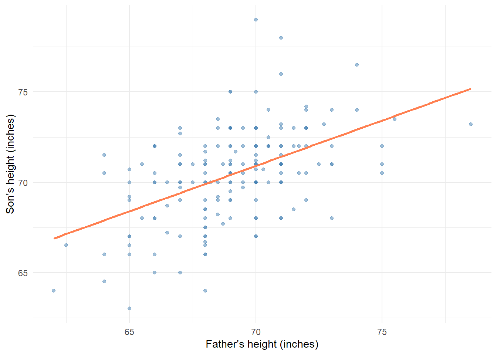
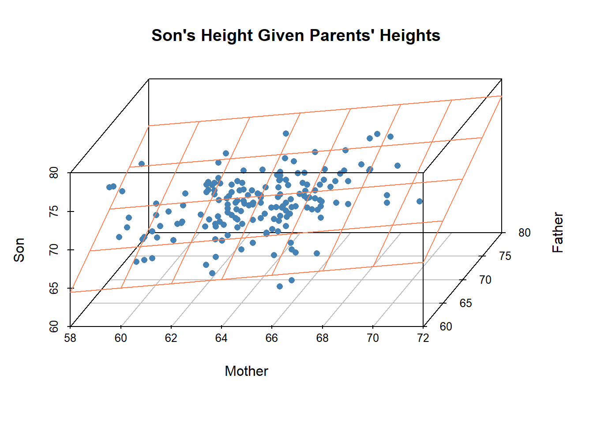
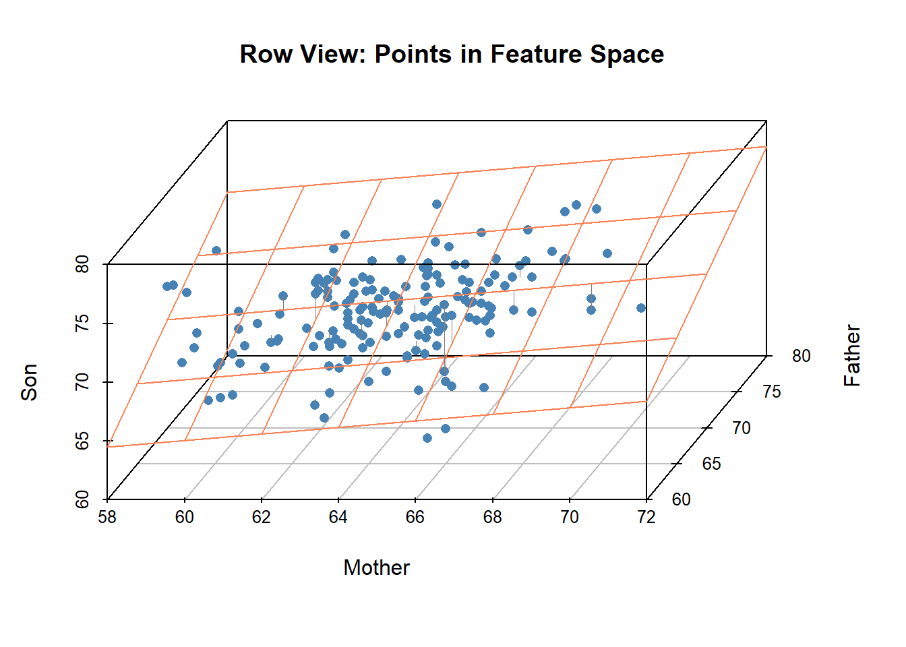

Show the code
library(tidyverse)
library(scatterplot3d)library(tidyverse)
library(scatterplot3d)# Load Galton family heights from eda4mldata
data(galton_families, package = "eda4mldata")
# Load OECD Better Life Index
data(oecd_bli, package = "eda4mldata")Linear regression is one of the most fundamental tools in statistics and machine learning. This chapter presents linear regression from the perspective of linear algebra, revealing a geometric interpretation that unifies regression with other methods we will encounter in subsequent chapters.
Least-squares linear regression is orthogonal projection onto feature space. Within the subspace spanned by the feature vectors, the vector \(\hat{y}\) of predicted values is closest to the response vector \(y\).
This geometric view has several advantages. First, it makes the algebra interpretable: the normal equations and the projection matrix are not arbitrary formulas but natural expressions of the projection operation. Second, it connects regression to other techniques—principal component analysis (PCA) and linear discriminant analysis (LDA) are also fundamentally about projection onto subspaces. Third, it clarifies what can go wrong: multicollinearity, overfitting, and numerical instability all have geometric explanations.
Our fist example launched modern-day linear regression.
In 1885, Sir Francis Galton examined the heights of parents and their adult children to investigate the heritability of human stature. This study introduced the term “regression”—Galton observed that children of unusually tall or short parents tend to be closer to the population average, a phenomenon he called “regression towards mediocrity.”
n_families <- nrow(galton_families)
n_sons <- sum(galton_families$gender == "male")
n_daughters <- sum(galton_families$gender == "female")The galton_families dataset contains 205 families, with one adult child per family (the oldest). Of these, 179 are sons and 26 are daughters. Each observation records the heights (in inches) of the father, mother, and child.
galton_families |>
dplyr::slice_head(n = 6) |>
knitr::kable(digits = 1)| family | father | mother | child | gender |
|---|---|---|---|---|
| 1 | 78.5 | 67.0 | 73.2 | male |
| 2 | 75.5 | 66.5 | 73.5 | male |
| 3 | 75.0 | 64.0 | 71.0 | male |
| 4 | 75.0 | 64.0 | 70.5 | male |
| 5 | 75.0 | 58.5 | 72.0 | male |
| 6 | 74.0 | 68.0 | 69.5 | female |
We begin with the simplest case: predicting a son’s height from his father’s height alone. This is simple linear regression—one response variable, one predictor.
# Filter to sons only
galton_sons <- galton_families |>
dplyr::filter(gender == "male")ggplot2::ggplot(galton_sons, ggplot2::aes(x = father, y = child)) +
ggplot2::geom_point(alpha = 0.5, color = "steelblue") +
ggplot2::geom_smooth(method = "lm", se = FALSE, color = "coral") +
ggplot2::labs(
x = "Father's height (inches)",
y = "Son's height (inches)"
) +
ggplot2::theme_minimal()
The regression line represents the model:
\[ \hat{s} = \beta_0 + \beta_1 \times f \qquad(7.1)\]
where \(\hat{s}\) is the predicted son’s height and \(f\) is the father’s height. The coefficients \((\beta_0, \beta_1)\) are chosen to minimize the sum of squared vertical distances from the data points to the line.
lm_father_son <- lm(child ~ father, data = galton_sons)
lm_father_son |>
broom::tidy() |>
knitr::kable(digits = 3)| term | estimate | std.error | statistic | p.value |
|---|---|---|---|---|
| (Intercept) | 35.712 | 4.517 | 7.906 | 0 |
| father | 0.503 | 0.065 | 7.696 | 0 |
The slope of 0.503 means that, on average, each additional inch in father’s height is associated with about 0.5 inches in the son’s height. The fact that this slope is less than 1 is Galton’s “regression to the mean”—tall fathers tend to have sons who are tall, but not quite as tall as their fathers.
We can expand the model to include both parents’ heights as predictors. This is multiple linear regression—one response variable, multiple predictors.
\[ \hat{s} = \beta_0 + \beta_m \times m + \beta_f \times f \qquad(7.2)\]
where \(m\) is the mother’s height and \(f\) is the father’s height.
lm_both <- lm(child ~ mother + father, data = galton_sons)
lm_both |>
broom::tidy() |>
knitr::kable(digits = 3)| term | estimate | std.error | statistic | p.value |
|---|---|---|---|---|
| (Intercept) | 19.937 | 5.796 | 3.440 | 0.001 |
| mother | 0.277 | 0.068 | 4.093 | 0.000 |
| father | 0.474 | 0.063 | 7.527 | 0.000 |
Both parents contribute to the prediction, though the father’s coefficient is somewhat larger. The model now defines a regression plane rather than a regression line.
s3d <- scatterplot3d::scatterplot3d(
x = galton_sons$mother, xlab = "Mother",
y = galton_sons$father, ylab = "Father",
z = galton_sons$child, zlab = "Son",
pch = 16,
color = "steelblue",
angle = 55,
main = "Son's Height Given Parents' Heights"
)
s3d$plane3d(lm_both, col = "coral", lty = "solid")
The plane represents all possible predictions \(\hat{s}\) for any combination of mother’s and father’s heights. Each observed son’s height is a point above or below this plane, and the vertical distance from the point to the plane is the residual—the prediction error for that observation.
Here is where linear algebra enters the picture. In matrix notation, the multiple regression model is:
\[ s_\bullet = X_{\bullet,\bullet} \; \beta_\bullet + \epsilon_\bullet \qquad(7.3)\]
where:
The columns of \(X_{\bullet,\bullet}\) are vectors in \(n\)-dimensional space (one dimension per observation). The column space of \(X\), denoted \(\text{col}(X)\), is the subspace spanned by these vectors. Any prediction \(\hat{s} = X\beta\) is a linear combination of these column vectors and therefore lies within \(\text{col}(X)\).
The least-squares solution \(\hat{s}\) is the orthogonal projection of \(s\) onto \(\text{col}(X)\). It is the point in feature space closest to the response vector.
The residual vector \(\epsilon = s - \hat{s}\) is perpendicular to every vector in \(\text{col}(X)\). This orthogonality is not a coincidence—it is the defining property of least-squares regression. If the residual had any component along \(\text{col}(X)\), we could reduce its length by adjusting the prediction.
We will develop this geometric interpretation more fully after introducing additional notation and considering one more data example.
The Galton data has just two predictors. Real-world regression problems often involve many more. The OECD’s Better Life Index provides an example with 24 indicator variables measuring various aspects of well-being across 36 countries.
oecd_bli |>
dplyr::select(1:8) |>
dplyr::slice_head(n = 5) |>
knitr::kable(digits = 1)| code | country | HO_BASE | HO_HISH | HO_NUMR | IW_HADI | IW_HNFW | JE_EMPL |
|---|---|---|---|---|---|---|---|
| AUS | Australia | 1.1 | 20 | 2.3 | 31588 | 47657 | 72 |
| AUT | Austria | 1.0 | 21 | 1.6 | 31173 | 49887 | 72 |
| BEL | Belgium | 2.0 | 21 | 2.2 | 28307 | 83876 | 62 |
| BRA | Brazil | 6.7 | 21 | 1.6 | 11664 | 6844 | 67 |
| CAN | Canada | 0.2 | 21 | 2.5 | 29365 | 67913 | 72 |
Suppose we want to predict life satisfaction (SW_LIFS) from the other indicators. This gives us 23 predictors.
# Predict life satisfaction from other indicators
bli_numeric <- oecd_bli |>
dplyr::select(-code, -country)
lm_bli <- lm(SW_LIFS ~ ., data = bli_numeric)
# Show just a few coefficients
lm_bli |>
broom::tidy() |>
dplyr::slice_head(n = 8) |>
knitr::kable(digits = 3)| term | estimate | std.error | statistic | p.value |
|---|---|---|---|---|
| (Intercept) | 0.679 | 9.119 | 0.074 | 0.942 |
| HO_BASE | -0.098 | 0.073 | -1.337 | 0.206 |
| HO_HISH | 0.030 | 0.045 | 0.665 | 0.518 |
| HO_NUMR | 0.528 | 0.621 | 0.851 | 0.411 |
| IW_HADI | 0.000 | 0.000 | 0.190 | 0.853 |
| IW_HNFW | 0.000 | 0.000 | -1.321 | 0.211 |
| JE_EMPL | 0.042 | 0.033 | 1.240 | 0.239 |
| JE_LMIS | 0.023 | 0.046 | 0.502 | 0.625 |
The geometry is the same as before: we project the response vector onto the subspace spanned by the predictor columns. But now that subspace has dimension 23 within a space of dimension 36. With 23 parameters estimated from only 36 observations, the coefficient estimates have large standard errors and the model is prone to overfitting.
This tension between the number of predictors and the number of observations is a central theme in machine learning. We will return to it when we discuss regularization and dimension reduction.
We now establish notation for the general linear regression problem. Let:
The linear model is:
\[ y_\bullet = X_{\bullet,\bullet} \; \beta_\bullet + \epsilon_\bullet \qquad(7.4)\]
The feature matrix \(X_{\bullet,\bullet}\) often includes a column of ones to accommodate an intercept term. The columns of \(X\) are called feature vectors or predictor variables. The subscript notation \(x_{\bullet,k}\) denotes the \(k\)-th column of \(X\)—a vector of length \(n\).
The columns of \(X\) span a subspace of \(\mathbb{R}^n\) called the feature space or column space:
\[ \text{col}(X_{\bullet,\bullet}) = \text{span}(x_{\bullet,1}, \ldots, x_{\bullet,d}) \qquad(7.5)\]
Any linear combination of the columns lies in this subspace:
\[ X_{\bullet,\bullet} \; \beta_\bullet = \beta_1 \, x_{\bullet,1} + \cdots + \beta_d \, x_{\bullet,d} \in \text{col}(X_{\bullet,\bullet}) \qquad(7.6)\]
The dimension of \(\text{col}(X)\) is the rank of \(X\), denoted \(\text{rank}(X)\). If the columns are linearly independent, the rank equals \(d\). The rank is smaller when the columns are linearly dependent (for example, when \(d > n\)).
There are two complementary ways to view a data matrix:
Row perspective: Each of the \(n\) observations is a point in \(d\)-dimensional space. A scatter plot displays these points, and the regression surface (line, plane, or hyperplane) passes through the point cloud.
Column perspective: Each of the \(d\) features is a vector in \(n\)-dimensional space. The response \(y\) is also a vector in this space, and regression projects \(y\) onto the subspace spanned by the feature vectors.
Most data visualizations use the row perspective—we plot observations as points. But the mathematics of regression is most naturally expressed in the column perspective—we work with vectors whose length equals the number of observations.
| Perspective | Objects | Space Dimension | Regression Operation |
|---|---|---|---|
| Row | Observations as points | \(d\) | Fit surface through point cloud |
| Column | Features as vectors | \(n\) | Project \(y\) onto \(\text{col}(X)\) |
Understanding both perspectives is essential. We will move between them as needed, using the row view for visualization and the column view for algebra.
The least-squares criterion is to find \(\beta_\bullet\) that minimizes the sum of squared residuals:
\[ \min_{\beta_\bullet} \sum_{\nu=1}^{n} \epsilon_\nu^2 = \min_{\beta_\bullet} \| y_\bullet - X_{\bullet,\bullet} \beta_\bullet \|^2 \qquad(7.7)\]
To understand this geometrically, we need the concepts of vector norms and inner products.
The Euclidean norm (or \(\ell_2\) norm) of a vector \(v_\bullet \in \mathbb{R}^n\) is its length:
\[ \| v_\bullet \|_2 = \sqrt{\sum_{\nu=1}^{n} v_\nu^2} \qquad(7.8)\]
The squared norm \(\| v_\bullet \|_2^2\) is the sum of squared components—exactly the quantity minimized in least squares.
More generally, for any \(p \geq 1\), the \(p\)-norm is:
\[ \| v_\bullet \|_p = \left( \sum_{\nu=1}^{n} |v_\nu|^p \right)^{1/p} \qquad(7.9)\]
Special cases include \(\| v_\bullet \|_1 = \sum |v_\nu|\) (the Manhattan or taxicab norm) and \(\| v_\bullet \|_\infty = \max |v_\nu|\) (the maximum norm). Different norms lead to different regression methods—\(\ell_1\) regression is more robust to outliers, and \(\ell_1\) penalties on coefficients yield the LASSO. 1
The inner product (or dot product) of vectors \(v_\bullet, w_\bullet \in \mathbb{R}^n\) is:
\[ \langle v_\bullet, w_\bullet \rangle = v_\bullet^\top w_\bullet = \sum_{\nu=1}^{n} v_\nu w_\nu \qquad(7.10)\]
The inner product relates to the norm via:
\[ \| v_\bullet \|_2^2 = \langle v_\bullet, v_\bullet \rangle \qquad(7.11)\]
Two vectors are orthogonal (perpendicular) when their inner product is zero:
\[ v_\bullet \perp w_\bullet \iff \langle v_\bullet, w_\bullet \rangle = 0 \qquad(7.12)\]
Consider again the regression model with an intercept:
\[ \hat{s} = \beta_0 + \beta_m m + \beta_f f \]
The intercept \(\beta_0\) ensures the regression surface passes through the point \((\bar{m}, \bar{f}, \bar{s})\)—the centroid of the data. We can eliminate the intercept by centering each variable: subtracting its mean.
For any vector \(v_\bullet\), define the centered vector:
\[ \dot{v}_\bullet = v_\bullet - \bar{v} \, \mathbf{1}_\bullet \qquad(7.13)\]
where \(\bar{v} = \frac{1}{n} \sum_{\nu=1}^n v_\nu\) is the mean and \(\mathbf{1}_\bullet = (1, \ldots, 1)^\top\) is the vector of ones.
After centering, \(\sum_{\nu} \dot{v}_\nu = 0\), meaning the centered vector is orthogonal to the constant vector: \(\dot{v}_\bullet \perp \mathbf{1}_\bullet\).
# Center the Galton sons data
galton_centered <- galton_sons |>
dplyr::mutate(
mother_c = mother - mean(mother),
father_c = father - mean(father),
child_c = child - mean(child)
)
# Regression with centered data (no intercept needed)
lm_centered <- lm(child_c ~ 0 + mother_c + father_c, data = galton_centered)
# Compare coefficients
tibble::tibble(
Term = c("Mother", "Father"),
`With intercept` = coef(lm_both)[2:3],
`Centered (no intercept)` = coef(lm_centered)
) |>
knitr::kable(digits = 3)| Term | With intercept | Centered (no intercept) |
|---|---|---|
| Mother | 0.277 | 0.277 |
| Father | 0.474 | 0.474 |
The slope coefficients are identical. Centering eliminates the intercept without changing the other coefficients. Geometrically, centering shifts the origin to the centroid of the data, so the regression surface (now a proper subspace) passes through the origin.
Centering can be expressed as matrix multiplication:
\[ \dot{v}_\bullet = C_{\bullet,\bullet} \; v_\bullet \qquad(7.14)\]
where the centering matrix is:
\[ C_{\bullet,\bullet} = I_{\bullet,\bullet} - \frac{1}{n} \mathbf{1}_\bullet \mathbf{1}_\bullet^\top \qquad(7.15)\]
The matrix \(\frac{1}{n} \mathbf{1}_\bullet \mathbf{1}_\bullet^\top\) projects any vector onto the constant vector (replacing each component with the mean). Subtracting this from the identity gives the complementary projection—onto the subspace orthogonal to the constant vector.
The centering matrix \(C\) is itself a projection matrix: it is symmetric (\(C^\top = C\)) and idempotent (\(C^2 = C\)).
We now arrive at the geometric heart of regression.
Consider the simplest case: projecting a vector \(y_\bullet\) onto a one-dimensional subspace spanned by a single vector \(x_\bullet\).
The projection \(\hat{y}_\bullet\) is the point on the line through \(x_\bullet\) closest to \(y_\bullet\):
\[ \hat{y}_\bullet = \frac{\langle y_\bullet, x_\bullet \rangle}{\langle x_\bullet, x_\bullet \rangle} \, x_\bullet = \frac{x_\bullet^\top y_\bullet}{x_\bullet^\top x_\bullet} \, x_\bullet \qquad(7.16)\]
The scalar coefficient \(\hat{\beta} = \frac{x_\bullet^\top y_\bullet}{x_\bullet^\top x_\bullet}\) is the regression coefficient in simple linear regression (without intercept).
# Simple example vectors
y_vec <- c(3, 1, 2)
x_vec <- c(1, 2, 2)
# Compute projection
beta_hat <- sum(y_vec * x_vec) / sum(x_vec * x_vec)
y_hat <- beta_hat * x_vec
resid <- y_vec - y_hat
# Verify orthogonality
cat("Inner product of residual and x:", sum(resid * x_vec), "\n")Inner product of residual and x: 0 The residual \(\epsilon_\bullet = y_\bullet - \hat{y}_\bullet\) is orthogonal to \(x_\bullet\). This is not an accident—it is the defining property of orthogonal projection.
For multiple regression, we project onto the subspace \(\text{col}(X)\) spanned by all feature vectors. The projection \(\hat{y}_\bullet\) satisfies:
Condition 2 means the residual is orthogonal to every column of \(X\):
\[ x_{\bullet,k}^\top (y_\bullet - \hat{y}_\bullet) = 0 \quad \text{for } k = 1, \ldots, d \qquad(7.17)\]
Stacking these conditions gives:
\[ X_{\bullet,\bullet}^\top (y_\bullet - \hat{y}_\bullet) = \mathbf{0}_\bullet \qquad(7.18)\]
Since \(\hat{y}_\bullet = X_{\bullet,\bullet} \hat{\beta}_\bullet\), the orthogonality condition becomes:
\[ X_{\bullet,\bullet}^\top (y_\bullet - X_{\bullet,\bullet} \hat{\beta}_\bullet) = \mathbf{0}_\bullet \]
Expanding:
\[ X_{\bullet,\bullet}^\top y_\bullet - X_{\bullet,\bullet}^\top X_{\bullet,\bullet} \hat{\beta}_\bullet = \mathbf{0}_\bullet \]
Rearranging gives the normal equations:
\[ X_{\bullet,\bullet}^\top X_{\bullet,\bullet} \; \hat{\beta}_\bullet = X_{\bullet,\bullet}^\top y_\bullet \qquad(7.19)\]
If \(X_{\bullet,\bullet}^\top X_{\bullet,\bullet}\) is invertible (which requires the columns of \(X\) to be linearly independent), we can solve for the coefficients:
\[ \hat{\beta}_\bullet = (X_{\bullet,\bullet}^\top X_{\bullet,\bullet})^{-1} X_{\bullet,\bullet}^\top y_\bullet \qquad(7.20)\]
The predicted values are:
\[ \hat{y}_\bullet = X_{\bullet,\bullet} \hat{\beta}_\bullet = X_{\bullet,\bullet} (X_{\bullet,\bullet}^\top X_{\bullet,\bullet})^{-1} X_{\bullet,\bullet}^\top y_\bullet = P_{\bullet,\bullet} \; y_\bullet \qquad(7.21)\]
where the projection matrix (or “hat matrix”) is:
\[ P_{\bullet,\bullet} = X_{\bullet,\bullet} (X_{\bullet,\bullet}^\top X_{\bullet,\bullet})^{-1} X_{\bullet,\bullet}^\top \qquad(7.22)\]
The projection matrix \(P\) has remarkable properties:
Symmetric: \(P_{\bullet,\bullet}^\top = P_{\bullet,\bullet}\)
Idempotent: \(P_{\bullet,\bullet}^2 = P_{\bullet,\bullet}\)
The idempotent property reflects the fact that projecting twice is the same as projecting once—once a vector is in \(\text{col}(X)\), it stays there.
# Construct projection matrix for small example
X <- cbind(1, galton_sons$mother[1:5], galton_sons$father[1:5])
P <- X %*% solve(t(X) %*% X) %*% t(X)
# Verify idempotent: P^2 = P
cat("Max difference |P^2 - P|:", max(abs(P %*% P - P)), "\n")Max difference |P^2 - P|: 1.683029e-13 # Verify symmetric: P' = P
cat("Max difference |P' - P|:", max(abs(t(P) - P)), "\n")Max difference |P' - P|: 1.225686e-13 The residuals are:
\[ \epsilon_\bullet = y_\bullet - \hat{y}_\bullet = y_\bullet - P_{\bullet,\bullet} y_\bullet = (I_{\bullet,\bullet} - P_{\bullet,\bullet}) y_\bullet \]
The matrix \((I - P)\) is also a projection matrix—it projects onto the orthogonal complement of \(\text{col}(X)\).
Since \(P\) and \((I - P)\) project onto orthogonal subspaces:
\[ \hat{y}_\bullet^\top \epsilon_\bullet = y_\bullet^\top P_{\bullet,\bullet}^\top (I_{\bullet,\bullet} - P_{\bullet,\bullet}) y_\bullet = y_\bullet^\top (P_{\bullet,\bullet} - P_{\bullet,\bullet}^2) y_\bullet = 0 \qquad(7.23)\]
The predicted values and residuals are orthogonal vectors.
The regression coefficients \(\hat{\beta}_\bullet\) have a natural geometric interpretation: they are the coordinates of \(\hat{y}_\bullet\) expressed in the basis formed by the feature vectors.
When the feature vectors are orthogonal, each coefficient is simply the projection of \(y\) onto that feature, independent of the others:
\[ \hat{\beta}_k = \frac{\langle y_\bullet, x_{\bullet,k} \rangle}{\langle x_{\bullet,k}, x_{\bullet,k} \rangle} \qquad(7.24)\]
When the feature vectors are not orthogonal (the typical case), the coefficients are interdependent. The projection of \(y\) onto one feature must account for its correlation with the other features. This is why coefficient estimates can change dramatically when predictors are added or removed—a phenomenon that surprises students who expect regression coefficients to behave like correlation coefficients.
When feature vectors are nearly parallel (highly correlated), small changes in the data can cause large changes in the coefficients. In this situation the projection is numerically unstable.
The matrix \(X^\top X\) becomes nearly singular when columns are highly correlated, making \((X^\top X)^{-1}\) have very large entries. This amplifies noise in the data into noise in the coefficient estimates.
# Correlation between mother and father heights
cor(galton_sons$mother, galton_sons$father)[1] 0.1110306In the Galton data, mother’s and father’s heights are positively correlated (assortative mating), but not so highly as to cause serious multicollinearity.
For centered data, the orthogonality of \(\hat{y}_\bullet\) and \(\epsilon_\bullet\) implies a Pythagorean relationship:
\[ \| \dot{y}_\bullet \|^2 = \| \hat{\dot{y}}_\bullet \|^2 + \| \dot{\epsilon}_\bullet \|^2 \qquad(7.25)\]
This decomposes the total variation in \(y\) into explained and unexplained components:
| Term | Formula | Name |
|---|---|---|
| \(\| \dot{y}_\bullet \|^2\) | \(\sum (y_\nu - \bar{y})^2\) | Total Sum of Squares (TSS) |
| \(\| \hat{\dot{y}}_\bullet \|^2\) | \(\sum (\hat{y}_\nu - \bar{y})^2\) | Explained Sum of Squares (ESS) |
| \(\| \dot{\epsilon}_\bullet \|^2\) | \(\sum (y_\nu - \hat{y}_\nu)^2\) | Residual Sum of Squares (RSS) |
The coefficient of determination \(R^2\) is the proportion of variance explained:
\[ R^2 = \frac{\| \hat{\dot{y}}_\bullet \|^2}{\| \dot{y}_\bullet \|^2} = 1 - \frac{\| \dot{\epsilon}_\bullet \|^2}{\| \dot{y}_\bullet \|^2} \qquad(7.26)\]
Geometrically, \(R^2\) is the squared cosine of the angle between \(\dot{y}_\bullet\) and \(\hat{\dot{y}}_\bullet\):
\[ R^2 = \cos^2(\theta) \qquad(7.27)\]
When \(\hat{y}\) is close to \(y\) (small angle), \(R^2\) is near 1. When \(\hat{y}\) is nearly orthogonal to \(y\), \(R^2\) is near 0.
# Compute R² for the Galton regression
y <- galton_sons$child
y_bar <- mean(y)
y_centered <- y - y_bar
y_hat <- fitted(lm_both)
y_hat_centered <- y_hat - y_bar
TSS <- sum(y_centered^2)
ESS <- sum(y_hat_centered^2)
RSS <- sum(residuals(lm_both)^2)
tibble::tibble(
Quantity = c("Total SS", "Explained SS", "Residual SS", "R²"),
Value = c(TSS, ESS, RSS, ESS/TSS)
) |>
knitr::kable(digits = 2)| Quantity | Value |
|---|---|
| Total SS | 1163.86 |
| Explained SS | 367.61 |
| Residual SS | 796.25 |
| R² | 0.32 |
The regression explains about 32% of the variance in sons’ heights.
We have emphasized that regression can be viewed from two perspectives. Let us make this concrete with visualizations.
The row view is familiar: each observation is a point, and the regression surface passes through the point cloud.
s3d <- scatterplot3d::scatterplot3d(
x = galton_sons$mother, xlab = "Mother",
y = galton_sons$father, ylab = "Father",
z = galton_sons$child, zlab = "Son",
pch = 16,
color = "steelblue",
angle = 55,
main = "Row View: Points in Feature Space"
)
s3d$plane3d(lm_both, col = "coral", lty = "solid")
# Add residual segments for a subset
n_show <- 20
set.seed(42)
idx <- sample(nrow(galton_sons), n_show)
orig <- s3d$xyz.convert(
galton_sons$mother[idx],
galton_sons$father[idx],
galton_sons$child[idx]
)
proj <- s3d$xyz.convert(
galton_sons$mother[idx],
galton_sons$father[idx],
fitted(lm_both)[idx]
)
segments(orig$x, orig$y, proj$x, proj$y, col = "gray50", lwd = 0.8)
The vertical segments show residuals—the distances minimized by least squares.
The column view is less familiar but more revealing of the linear algebra. Each feature is a vector of length \(n\) (one component per observation), and we project the response vector onto the subspace spanned by the feature vectors.
For illustration, consider a small sample of the data:
# Small sample for visualization
set.seed(123)
n_small <- 10
small_idx <- sample(nrow(galton_sons), n_small)
small_data <- galton_sons[small_idx, ]
# Center the data
m_c <- small_data$mother - mean(small_data$mother)
f_c <- small_data$father - mean(small_data$father)
s_c <- small_data$child - mean(small_data$child)
# Fit regression on small sample
lm_small <- lm(s_c ~ 0 + m_c + f_c)
s_hat_c <- fitted(lm_small)In the column view, we have:
The regression coefficients express \(\hat{\dot{s}}_\bullet\) as a linear combination:
\[ \hat{\dot{s}}_\bullet = 0.085 \times \dot{m}_\bullet + 0.54 \times \dot{f}_\bullet \]
# Verify the projection is in the span
s_reconstructed <- coef(lm_small)[1] * m_c + coef(lm_small)[2] * f_c
cat("Max difference |s_hat - reconstruction|:",
max(abs(s_hat_c - s_reconstructed)), "\n")Max difference |s_hat - reconstruction|: 8.881784e-16 # Verify orthogonality of residual to both features
resid_c <- s_c - s_hat_c
cat("Residual · mother:", round(sum(resid_c * m_c), 6), "\n")Residual · mother: 0 cat("Residual · father:", round(sum(resid_c * f_c), 6), "\n")Residual · father: 0 The residual vector is orthogonal to both feature vectors, confirming it lies in the orthogonal complement of \(\text{col}(X)\).
The projection perspective on regression is not merely a mathematical curiosity—it connects to fundamental ideas throughout machine learning.
When \(X^\top X\) is nearly singular or when we want to prevent overfitting, ridge regression adds a penalty term:
\[ \hat{\beta}_{\text{ridge}} = (X^\top X + \lambda I)^{-1} X^\top y \]
The penalty \(\lambda I\) makes the matrix invertible and shrinks coefficients toward zero. Geometrically, this modifies the projection to avoid directions of high variance.
Principal Component Analysis (?sec-pca) finds the directions of maximum variance in the feature space. These directions are orthogonal and can be used as a new basis. Projecting onto the top \(k\) principal components gives a lower-dimensional representation that captures most of the information.
Linear Discriminant Analysis (?sec-lda) finds directions that maximize separation between classes. Like PCA, it involves projection onto subspaces, but the criterion is discrimination rather than variance.
Kernel methods do not require explicit computation of the coordinates in higher-dimensional space. These methods use kernel functions based on inner products of the form \(\left < \phi(x_{\bullet, j}), \, \phi(x_{\bullet, k}) \right >\), in which the user chooses from a curated set of functions \(\phi (\cdot)\).
Each layer of a neural network performs a linear transformation followed by a nonlinear activation. The linear transformation is a projection (plus translation), and the nonlinearity allows the composition of many such operations to represent complex functions.
This chapter presents linear regression from the perspective of linear algebra. The key insights are:
Regression is projection. The least-squares fitted values \(\hat{y}\) are the orthogonal projection of the response vector \(y\) onto the feature space \(\text{col}(X)\). This is not an analogy—it is exactly what the normal equations compute.
Row versus column perspectives. The row view (observations as points) is natural for visualization; the column view (features as vectors) is natural for algebra. Both describe the same mathematical object.
Centering simplifies geometry. Centering data (subtracting means) eliminates the intercept term, making the regression surface a proper subspace through the origin.
The projection matrix encapsulates regression. The matrix \(P = X(X^\top X)^{-1}X^\top\) maps any response vector to its least-squares prediction. Its properties (symmetric, idempotent) reflect the geometry of orthogonal projection.
Residuals are orthogonal to features. The residual vector \(\epsilon = y - \hat{y}\) is perpendicular to every column of \(X\). This orthogonality is the defining property of least squares.
Variance decomposes (Pythagorean Theorem). For centered data, \(\|y\|^2 = \|\hat{y}\|^2 + \|\epsilon\|^2\). The coefficient \(R^2 = \|\hat{y}\|^2 / \|y\|^2\) measures the proportion of variance explained.
These ideas recur throughout machine learning. Principal component analysis finds subspaces that maximize variance; linear discriminant analysis finds subspaces that maximize class separation; regularization modifies the projection to improve generalization. Understanding regression as projection provides a foundation for all of these methods.
Consider a dataset with \(n = 5\) observations and \(d = 2\) features plus a response variable.
Describe what “row space” means in the context of visualizing this data. What dimension is it?
Describe what “column space” or “feature space” means. What dimension is it?
In which space does the orthogonal projection for least-squares regression actually occur?
Explain in your own words why the fitted values \(\hat{y}_\bullet\) must lie in \(\text{col}(X_{\bullet,\bullet})\), the column space of the feature matrix.
Explain why the residual vector \(\epsilon_\bullet = y_\bullet - \hat{y}_\bullet\) is orthogonal to \(\text{col}(X_{\bullet,\bullet})\).
What does this orthogonality imply about the relationship between \(\epsilon_\bullet\) and each column of \(X_{\bullet,\bullet}\)?
Explain why centering the feature vectors (subtracting the mean from each column of \(X_{\bullet,\bullet}\)) eliminates the need for an intercept term in linear regression. What happens geometrically when data is centered?
What does it mean for the projection matrix \(P\) to be idempotent (\(P^2 = P\))? Give an intuitive explanation.
What does it mean for \(P\) to be symmetric (\(P^\top = P\))? Why is this necessary for orthogonal projection?
Let \(y_\bullet^\top = (3, 1, 2)\) and \(x_\bullet^\top = (1, 2, 2)\).
Find the orthogonal projection \(\hat{y}_\bullet\) of \(y_\bullet\) onto \(\text{span}(x_\bullet)\).
Calculate the residual vector \(\epsilon_\bullet = y_\bullet - \hat{y}_\bullet\).
Verify that the residual vector is orthogonal to \(x_\bullet\) by computing their inner product.
Sketch the vectors \((y_\bullet, x_\bullet, \hat{y}_\bullet, \epsilon_\bullet)\) in 3D space.
For the vectors \(u_\bullet = (1, 2, 3)\) and \(v_\bullet = (4, 1, 2)\):
Compute the Euclidean (\(\ell_2\)) distance between \(u_\bullet\) and \(v_\bullet\).
Compute the Manhattan (\(\ell_1\)) distance.
Which distance measure is affected more by outliers? Why?
Let:
\[ y_\bullet = \begin{pmatrix} 5 \\ 2 \\ 3 \\ 4 \end{pmatrix} \quad \text{and} \quad X_{\bullet,\bullet} = \begin{pmatrix} 1 & 0 \\ 0 & 1 \\ 1 & 1 \\ 1 & 0 \end{pmatrix} \]
Find the least-squares coefficient vector \(\hat{\beta}_\bullet\) by solving the normal equations \(X^\top X \hat{\beta} = X^\top y\).
Calculate \(\hat{y}_\bullet = X_{\bullet,\bullet} \hat{\beta}_\bullet\).
Verify that \(\hat{y}_\bullet\) is in \(\text{col}(X_{\bullet,\bullet})\) by expressing it as a linear combination of the columns of \(X\).
Calculate \(\|\epsilon_\bullet\|^2\) where \(\epsilon_\bullet = y_\bullet - \hat{y}_\bullet\).
For the 2D projection exercise above:
Compute \(\|y_\bullet\|^2\), \(\|\hat{y}_\bullet\|^2\), and \(\|\epsilon_\bullet\|^2\).
Verify that \(\|y_\bullet\|^2 = \|\hat{y}_\bullet\|^2 + \|\epsilon_\bullet\|^2\).
Explain geometrically why this relationship holds.
Using the galton_families data from eda4mldata:
Filter to sons only and center the mother, father, and child height vectors by subtracting their means.
Fit a linear model predicting centered son height from centered mother and father heights (without an intercept term).
Compare the coefficients from part (b) to those from an uncentered model with intercept. What changed and what stayed the same?
Verify that the predictions from both models are identical.
For the simple regression of son’s height on father’s height:
Create a scatter plot with the regression line.
Add vertical line segments showing the residuals for each observation.
Compute the sum of squared residuals.
Pick a different slope coefficient (not the least-squares value) and verify that it gives a larger sum of squared residuals.
Using a small subset (e.g., \(n = 10\)) of the Galton data:
Construct the design matrix \(X\) with columns for the intercept, mother’s height, and father’s height.
Compute the projection matrix \(P = X(X^\top X)^{-1}X^\top\).
Verify that \(P\) is symmetric and idempotent.
Compute \(\hat{y} = Py\) and verify it matches the output of lm().
Consider the pair of \(n\)-dimensional vectors \((v_\bullet, w_\bullet)\). Recall that \(\bar{v}\) denotes the arithmetic mean and \(\dot{v}_\bullet = v_\bullet - \bar{v} \mathbf{1}_\bullet\) denotes the centered vector. The sample covariance is:
\[ \text{cov}(v_\bullet, w_\bullet) = \frac{1}{n-1} \sum_{i=1}^n (v_i - \bar{v})(w_i - \bar{w}) \]
Express the sample covariance using inner-product notation.
The sample variance is \(\text{var}(v_\bullet) = \text{cov}(v_\bullet, v_\bullet)\). Express \(\text{var}(v_\bullet)\) using norm notation.
The sample standard deviation is \(\text{sd}(v_\bullet) = \sqrt{\text{var}(v_\bullet)}\). Express this using norm notation.
Use inner-product notation to express the sample correlation: \[ \text{cor}(v_\bullet, w_\bullet) = \frac{1}{n-1} \sum_{i=1}^n \frac{v_i - \bar{v}}{\text{sd}(v_\bullet)} \cdot \frac{w_i - \bar{w}}{\text{sd}(w_\bullet)} \]
For any linear regression:
Show algebraically that for centered data, \(\|\dot{y}_\bullet\|^2 = \|\hat{\dot{y}}_\bullet\|^2 + \|\dot{\epsilon}_\bullet\|^2\).
Explain this geometrically using the Pythagorean theorem in \(n\)-dimensional space.
Verify this numerically with the Galton heights data.
Comment on the characterization: (total variation) = (explained variation) + (unexplained variation).
The projection matrix \(P\) is defined by \(P = X(X^\top X)^{-1}X^\top\).
Show that \(P\) is symmetric: \(P^\top = P\).
Show that \(P\) is idempotent: \(P^2 = P\).
What does the idempotent property mean geometrically?
Compute \(P\) for a small (\(n = 5\)) subset of the Galton heights data and verify these properties numerically.
Using centered Galton height data:
The regression coefficients \((\hat{\beta}_m, \hat{\beta}_f)\) are coordinates in the non-orthogonal basis \((\dot{m}_\bullet, \dot{f}_\bullet)\). Express \(\hat{\dot{s}}_\bullet\) in this basis.
Transform to an orthogonal basis using the Gram-Schmidt process.
Express \(\hat{\dot{s}}_\bullet\) in the orthogonal basis.
Verify that the projection is the same in both coordinate systems.